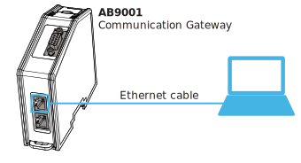

Set IP With Local Connection
-
From a PC connect to the gateway with a Ethernet cable to one of the Modbus-TCP ports.
 
-
On the PC download the software “HMS IPconfig - Utility for module TCP/IP configuration” from https://www.anybus.com/support/file-docdownloads/ x-gateway-modbus-tcp-specific/?ordercode=AB9001 https://www.anybus.com/support/file-docdownloads/ x-gateway-modbus-tcp-specific/?ordercode=AB9006.
-
Unpack the zip file and run the installer.
-
Start the program after the installation in finished. The installer will automatically scan for the connected gateway.
-
Click on the gateway in the list.
-
Make the required changes to the network settings for the gateway to function on your network.
Important: Make sure that the network settings confirm to your cyber security policy. -
Click Apply to confirm the new settings.
-
Reboot the gateway.